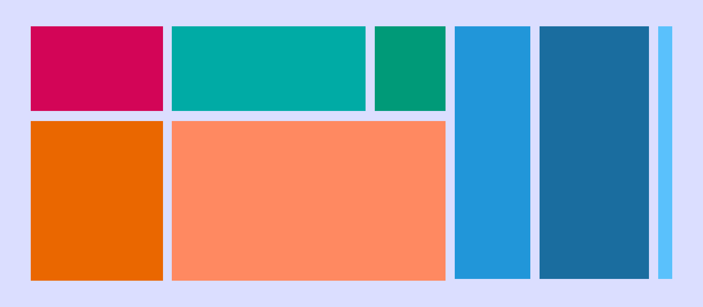
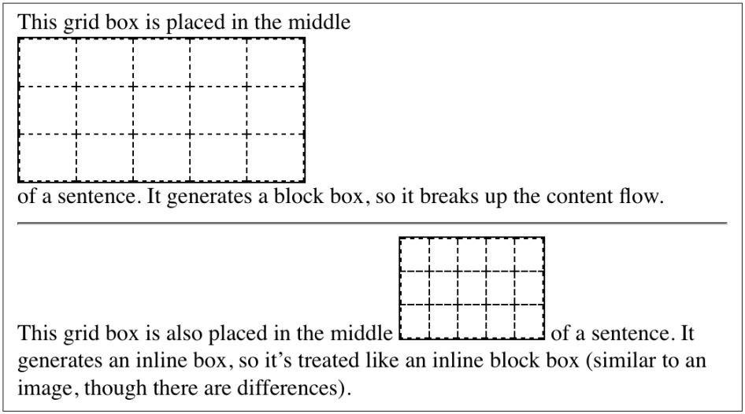
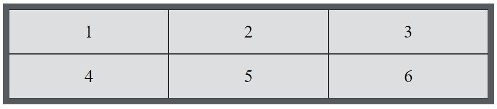

## CSS Grid Layout prepared by [HulionGH](https://github.com/HulionGH) <aside class="notes"> Hello, guys! My name is Julia and today we will talking about Grid Layout. We will discuss: <br> - what is a Grid and where to use it <br> - benefits of using Grid - what are main elements <br> - some displaying properties <br> - and so on <br> So let start our journey </aside>
### What is a Grid Layout?  <aside class="notes"> What is Grid? Grid is a layout with its emphasis horizontal lines (called rows) and vertical lines (called columns). it might feel like a table layout in certain ways, but it is much more than table layout. For example, grid allows elements to be laid out independently of the document source order, and even overlap pieces of the layout. You can also Nest grids inside grids (and nested will be called SUBGREEDS) Also grid child elements could position themselves And so many features. </aside>
### Some benefits of Grid: > - Reduced code > - Speed of development > - Nested Grids > - Responsiveness <img src="./css/grid_2.gif" alt="gif"> <aside class="notes"> So Let me show you some benefits of Grid: first of all it reduce code, and file size, because there is no need to include large libraries like Bootstrap in your project. It also increase speed of development - prototyping with Grid is fast and efficient. The Grid Layout is also useful for styling such smaller components as content sections with blog posts, for example. It let us easily change the placement of the grid items according to the device screen. </aside>
### Some benefits of Grid: > - Two-dimensional <aside class="notes"> One of the main advantages - is that grid is Two-dimensional. Grid layout was introduced in 2011. When pages were built using the table layout, which required some inelegant solutions to display content in accessible way. Later, was created Flexbox. And just in 2018 Grid gained its popularity mostly because of a two-dimensional layout that can be changed without affecting the markup. It provides an order for the rendering elements. If an element is too big for cell, the row and column will grow accordingly it size. SO grid is really ideal for page and form layout. For example I used it for container of toys at the Christmas task. </aside>
### Grid: regular and inline <pre><code><style> .grid-container { display: grid | inline-grid; } </style> </code></pre>  <aside class="notes"> There are two kinds of grids: regular grids and inline grids. The first one illustrated as a block-level box, and has display property - grid, The second one - as inline-level box and created with the display property: inline-grid. </aside>
### Grid Elements > > grid-container - parent element, grid-item - child elements <pre><code><div class="grid-container"> <div class="grid-item">1</div> <div class="grid-item">2</div> <div class="grid-item">3</div> <div class="grid-item">4</div> <div class="grid-item">5</div> <div class="grid-item">6</div> </div> <style> .grid-container { display: grid; grid-template-columns: auto auto auto; } </style> </code></pre> >  <aside class="notes"> So What grid is consist of?? A grid layout consists of a parent element (or container) and one or more child elements. Direct childs of the grid container automatically becomes grid items. </aside>
#### grid-template-columns && grid-template-rows <pre><code><style> .container { grid-template-columns: 1fr 2fr; /* e.g. 1fr 1fr 50px auto 100px 1fr */ grid-template-rows: 100px 200px; /* e.g. 1fr 1fr min-content 100px min-content */ } /* on the picture */ .container { grid-template-columns: [first] 40px [line2] 50px [line3] auto [col4-start] 50px [five] 40px [end]; grid-template-rows: [row1-start] 25% [row1-end] 100px [third-line] auto [last-line]; } </style> </code></pre> <img src="./css/template-column.svg" width="40%" alt="names"> <aside class="notes"> When you Define the columns and rows of the grid - The values represent the track size, and the space between them represents the grid line.. TRACK-SIZE – it is the space between two related grid lines. It can be a length,.. a percentage, or a fraction of the free space in the grid (using the fr unit) In the following example there is a grid with FIVE column tracks and THREE row tracks. This gives us SIX column lines and FOUR row lines. You can also name these lines as noted in the syntax below (row1-start, last-line and so on). </aside>
> the repeat() notation <pre><code><style> .container { grid-template-columns: repeat(3, 20px [col-start]); } /* equivalent */ .container { grid-template-columns: 20px [col-start] 20px [col-start] 20px [col-start]; } </style> </code></pre> > the **fr** unit <pre><code><style> .container { grid-template-columns: 1fr 1fr 1fr; } /* The free space is calculated after any non-flexible items */ .container { grid-template-columns: 1fr 50px 1fr 1fr; } </style> </code></pre> <aside class="notes"> If your definition contains repeating parts, you can use the repeat() notation as showed. The fraction unit allows you to set the size of a track as a fraction of the free space of the grid container. For example, the first will set each item to ONE THIRD of the width of the grid container. The free space is calculated after any non-flexible items. In the last example the total amount of free space available for fractions doesn’t include the 50px. </aside>
grid-template-areas: grid-area-name | . | none <pre><code><style>.item-a { grid-area: header; } .item-b { grid-area: main; } .item-c { grid-area: sidebar; } .item-d { grid-area: footer; } .container { display: grid; grid-template-columns: 50px 50px 50px 50px; grid-template-rows: auto; grid-template-areas: "header header header header" "main main . sidebar" "footer footer footer footer"; }</style></code></pre> <img src="./css/grid-areas.svg" width="32%" alt="areas"> <aside class="notes"> You can display items of the whole page using grid-template-areas. Look at the example - here we created a grid with FOUR columns wide and three rows tall. The first row will be composed of the header area. The middle row of two main areas, one empty cell, and one sidebar. The last row is all footer. Each row needs to have the same number of cells. Notice that you are not naming lines, just areas. When you use this syntax the lines of the areas are getting named automatically. </aside>
### grid-template <pre><code> <style> .container { grid-template: [row1-start] "header header header" 25px [row1-end] [row2-start] "footer footer footer" 25px [row2-end] / auto 50px auto; }; /* equal to */ .container { grid-template-rows: [row1-start] 25px [row1-end row2-start] 25px [row2-end]; grid-template-columns: auto 50px auto; grid-template-areas: "header header header" "footer footer footer"; }; </style> </code></pre> <aside class="notes"> A shorthand for setting grid-template-rows, grid-template-columns, and grid-template-areas in a single declaration - grid-template As you see it has such values as none – sets all three properties to their initial values grid-template-rows / grid-template-columns It also accepts a more complex for specifying all three. Here Is an example and its equivalent in areas-syntax. BUt it Is recommended to use the grid properties instead of grid-template. </aside>
### GAPS <pre><code><style> .container { /* standard */ column-gap: <line-size>; row-gap: <line-size>; /* old */ grid-column-gap: <line-size>; grid-row-gap: <line-size>; /* SHORT FORM */ /* standard */ gap: <grid-row-gap> <grid-column-gap>; /* old */ grid-gap: <grid-row-gap> <grid-column-gap>; } </style></code></pre> <img src="./css/grid-gap.svg" width="36%" alt="gap"> <aside class="notes"> So my faforite part - is gaps. Listed gaps specifies the size of the grid lines. The spaces or gaps are only created between the columns and rows, not on the outer edges. Note: The grid- prefix will be removed and grid-column-gap and grid-row-gap renamed to column-gap and row-gap. A shorthand for row-gap and column-gap - IS GAP. </aside>
### justify-items <pre><code><style> .container { justify-items: start | end | center | stretch; } </style></code></pre> Start <img src="./css/justify-items-start.svg" width="25%" alt="Start"> | Center <img src="./css/justify-items-center.svg" width="25%" alt="Center"> End <img src="./css/justify-items-end.svg" width="25%" alt="End"> | Stretch <img src="./css/justify-items-stretch.svg" width="25%" alt="Stretch"> <aside class="notes"> Aligns grid items along the row axis (as opposed to ALIGN-ITEMS which aligns along the column axis). This value applies to all grid items inside the container. Values: You can see how they display at these pictures. </aside>
> ### The end > > CSS Grid Layout > prepared by [HulionGH](https://github.com/HulionGH) <aside class="notes"> It is the end. Thank u for your attention! </aside>